I replaced WhatsApp groups, spreadsheets and paper attendance books with a calm, autopilot-first platform for schools. I also shipped an AI connector that lets owners run their centre from Claude or ChatGPT.
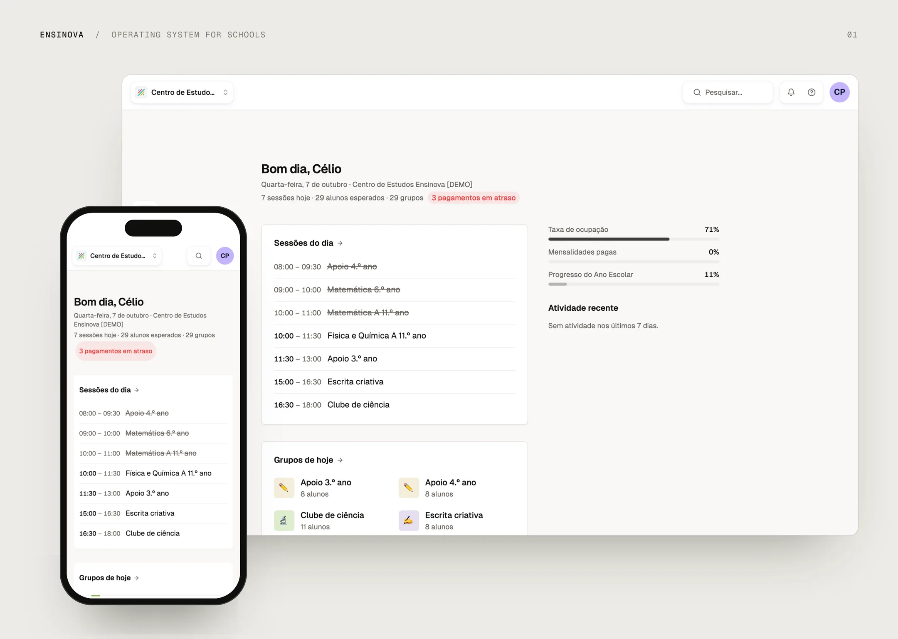
Small schools in Portugal (tutoring centres, after-school clubs, music, dance and sports studios) run on WhatsApp groups, Excel, paper attendance books and screenshots of bank transfers. The owner is often not technical. Teachers are short on time. Parents only ever open things on their phone.
The goal: a product an owner sets up once and that then runs itself. Enrolments create payment expectations. Payments generate Multibanco references. Invoices are issued in certified software. Parents are reminded without anyone chasing them.
Founder. I own the whole product: research with real centres, product strategy, brand, design system, UX and UI. I also do the full-stack engineering that ships it.
4,700+ commits in nine months and about 393k lines of TypeScript. Thousands of students use the product today.
Stack: Next.js, Postgres (Supabase + Prisma), Stripe, Cloudflare Workers and Durable Objects, Vercel, PostHog and Sentry.
- 122 screens, 88 API routes and 134 data models, behind 64 fine-grained permissions across 5 roles (admin, teacher, collaborator, guardian, student).
- About 3,000 automated tests, including parity tests that pin the AI layer to the product’s permission logic.
- 3 locales (pt-PT, en-US, es-ES) with written copy rules.
- 3 Portuguese payment providers (Multibanco and MB WAY), Stripe subscriptions and certified invoicing through Moloni and TOConline.
- An MCP connector live at mcp.ensinova.com with 11 tools, used from Claude and ChatGPT.
The brand brief was three words: Calm. Direct. Trustworthy. I wrote down the anti-references just as clearly: no SaaS-cream landing pages, no cartoon cuteness, no KPI walls.
Autopilot first.
Every screen asks what the owner should never have to do again. The admin defines offers once; enrolments, charges, reminders and invoices follow from them.
Designed for the least technical user.
Primary users are owners who are often older and not technical. That means WCAG 2.1 AA, a 14px text minimum, 16px inputs (so iOS never zooms), 44px touch targets and no hover-only interactions on iPad.
Status, not dashboards.
The home page answers “what is happening today and what needs me?”: sessions of the day, occupancy, overdue payments and recent activity. Nothing else.
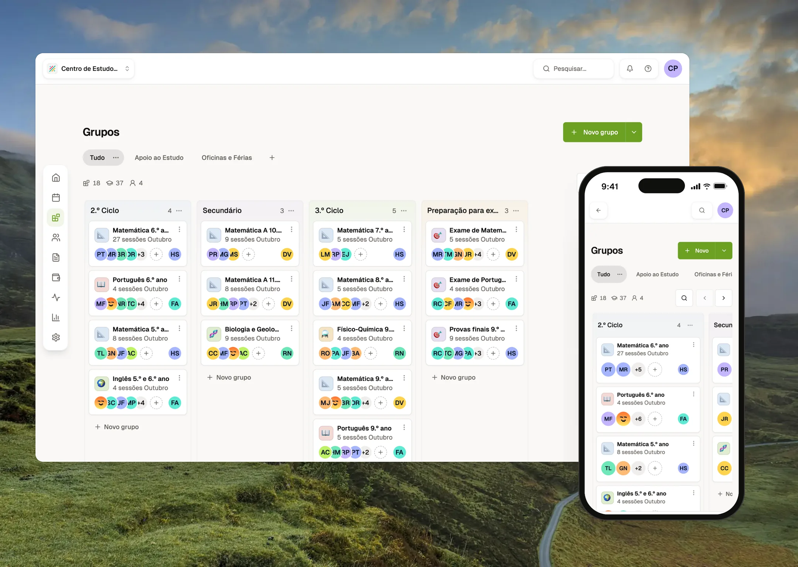
Groups instead of classes.
Centres don’t organise around “classes”. They organise around groups of kids who come on certain days. I redesigned the data model around Groups and moved the old Classes model to deprecated, with a migration path, while the product was live.
A money layer that runs itself.
Three separate flows that owners never have to understand: parents pay the centre (Multibanco references and MB WAY), the centre pays Ensinova (Stripe) and fiscal documents are issued in certified software. Ensinova orchestrates; it never pretends to be what it legally isn’t.
Attendance, calendar and timecards.
QR check-in, one-tap attendance, recurring sessions with exceptions, staff timecards and an agenda view that teachers actually open.
Privacy by role.
A teacher sees only their own students. Guardians get a mobile portal with no onboarding. Admins can edit what each role is allowed to do.
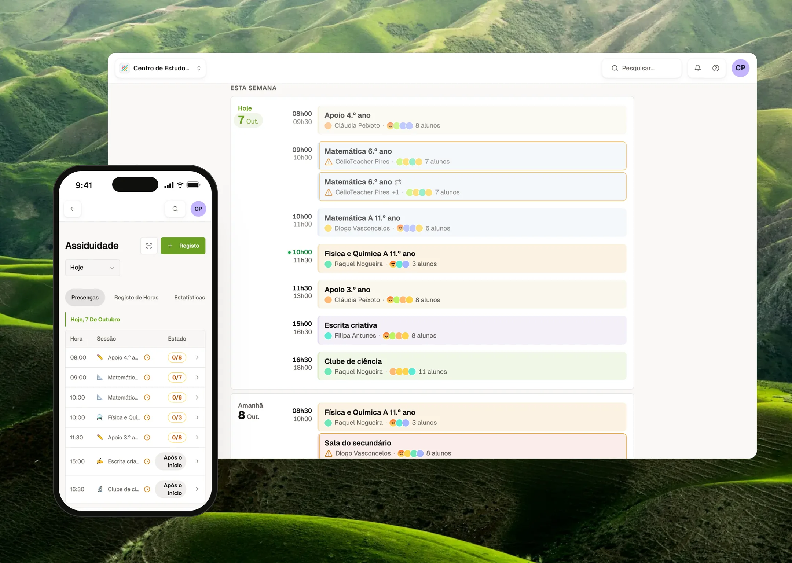
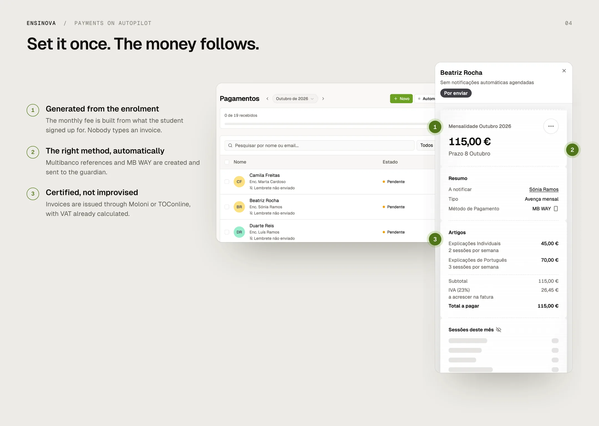
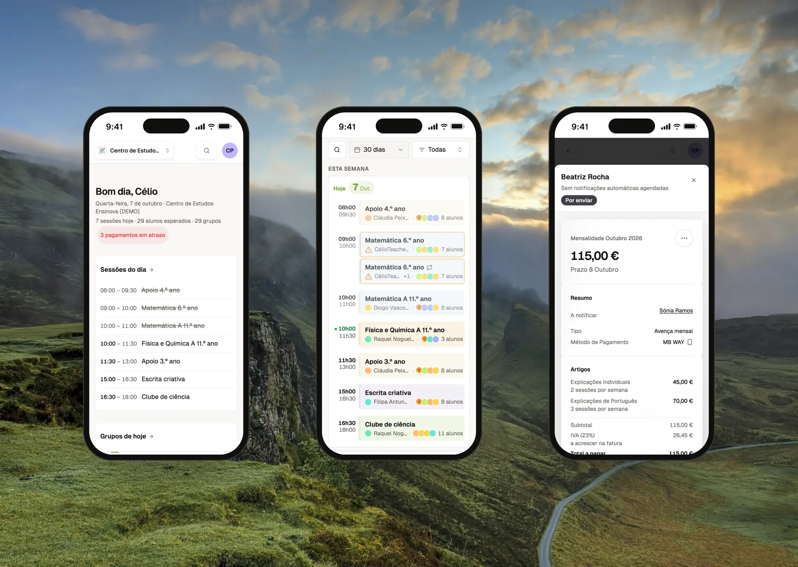
Integrating AI into my own workflow was the starting point, not the deliverable. The deliverable is an AI-powered system that customers use: the Ensinova MCP connector. An owner connects Ensinova to Claude or ChatGPT and asks “who hasn’t paid September?” or “add these 12 new students from this list”. The work gets done against live data.
The hard part wasn’t the model. It was deciding where trust lives. These are the architectural decisions I made:
- The model is an untrusted client. Tenant and role come from the OAuth 2.1 token (PKCE, dynamic client registration, branded login, org picker). They never come from tool arguments, so a prompt can’t move a session into another school.
- Invisible, not denied. Tools are registered per role and per plan, every session. A teacher’s assistant never even sees financial or write tools, so it can’t reason its way into them.
- Wide reads, narrow writes. Reads go through a separate read-only Postgres role. The worker cannot write, by construction. Writes are proxied to the product’s own API, which re-runs the same permission checks, plan limits and business logic as the UI. There is one source of truth, not two.
- Confirmation as interface. Every write starts as a dry-run preview (rows to create, duplicates to skip, plan verdict), is confirmed by a human and commits with an idempotency key. A retry never creates a student twice. Batches are capped at 50 rows. Names match ignoring accents. The system never guesses between two people with the same name.
- Pinned by tests. The AI layer’s student-scoping logic is a copy of the app’s, so parity tests fail the build if they ever drift apart.
I also designed the next version of the tool catalogue, about 33 tools. It adds a signed confirmation token tied to the exact preview, three friction levels with out-of-chat confirmation for high-risk actions and a prompt-injection threat model for text written by parents. It also takes an explicit stance against a generic “undo”, because an issued invoice can’t be un-issued.
Building a product this size alone only works if design judgment scales without me in every review. So I encoded it into agents and skills that run the same standards every time.
Specialist agents.
A UX reviewer, a UI-governance agent that enforces the design system, a shadcn auditor, a responsive tester that checks every change at phone, tablet, laptop and desktop widths, a tech-lead reviewer and a “dead-ends” agent that hunts for screens with no way forward.
An autonomous product pipeline.
Product requests go in. A reviewed, tested change comes out. A researcher agent maps the context. A clarity gate sends ambiguous requests back with questions instead of guessing. A planner writes gradeable acceptance criteria. After execution, the agent scores itself against every criterion and loops until each one reaches 8/10.
Guardrails, not hope.
The pipeline can never push code or mark work as done. Both are blocked in the prompt and in the tool permissions. A pre-commit hook blocks unsafe data access and leaked secrets. Every task ends in “In Review”, for a human.
A living rulebook.
Every incident becomes a rule in the agents’ shared memory, so the same mistake is never made twice. More than 100 written specs and plans give the agents (and any future designer) the reasoning behind each decision.
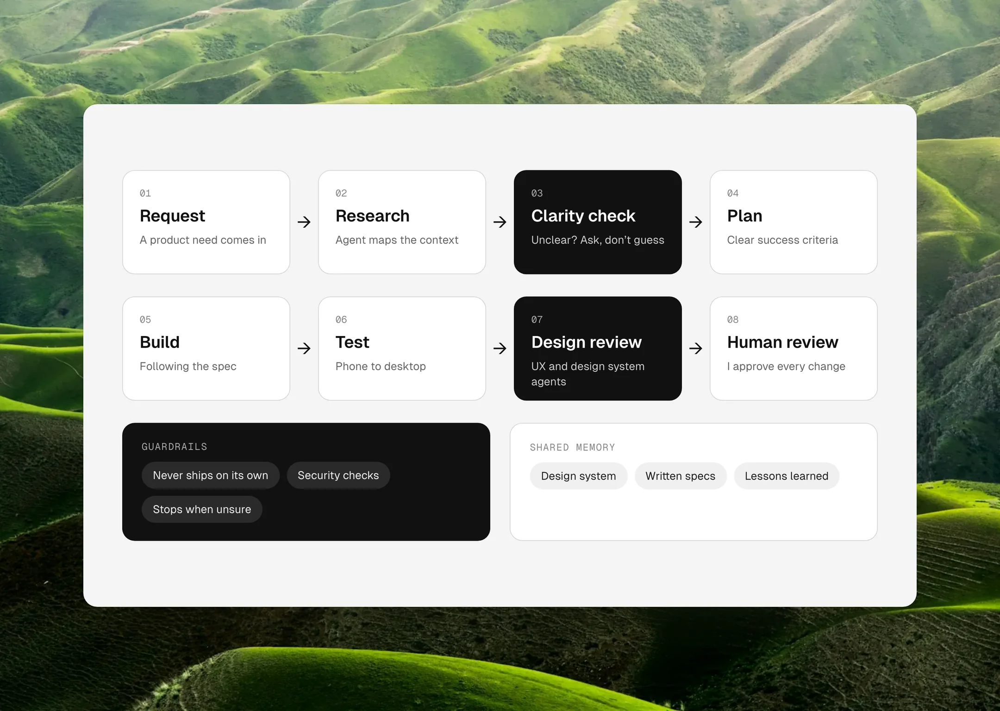
Discovery scales when it is a system, not a ritual. Raw product requests are researched against the codebase, the data model and earlier decisions before anything is designed. The output is a spec with testable criteria, not a ticket.
The same thinking powers the help centre. A manifest-driven Playwright engine captures every documented flow in light and dark mode: 103 screenshots and 8 videos, regenerated whenever the UI changes. It refuses to run against anything except localhost, so a real child’s data can never end up in a public asset. Privacy is a design constraint, enforced in code.
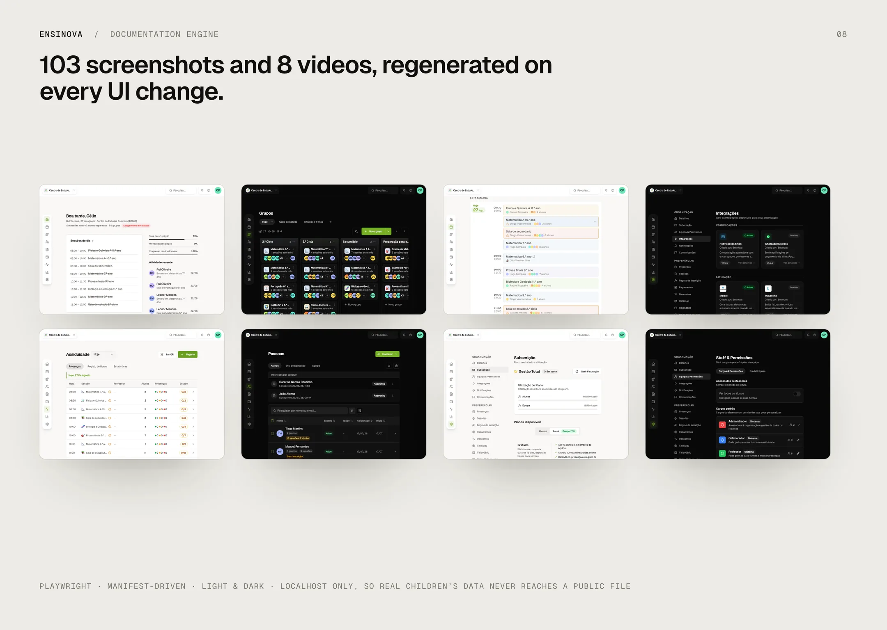
Tokens live in a machine-readable design spec (an olive primary, warm neutrals, Geist type, a 4/8/16/24/32 spacing scale), so people and agents read from the same source.
- 42 primitives built on Radix/shadcn, plus 53 product components with real prop contracts.
- Responsive by rule: dialogs on desktop become drawers on mobile.
- Light and dark themes, both kept at the AA contrast level.
- The component library is mirrored into Claude’s design environment with its real TypeScript contracts, so AI-generated designs use the components that actually ship, not lookalikes.
- Copy is part of the system: formal Portuguese, inclusive gendered titles and the same tone in three languages.
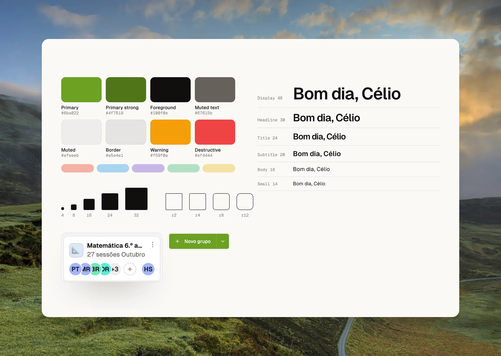
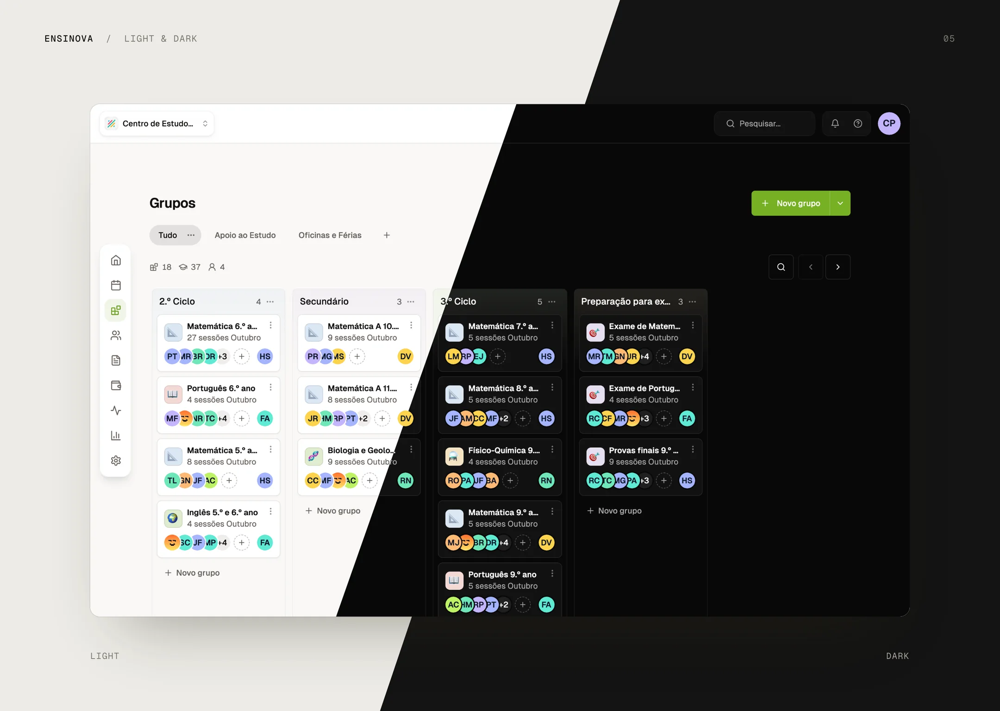
I designed the brand, the landing page, the marketing pages for each kind of centre, the illustrated feature intros and the onboarding. The visual language stays consistent from the first landing page a centre sees to the push notification a parent gets when a payment lands.
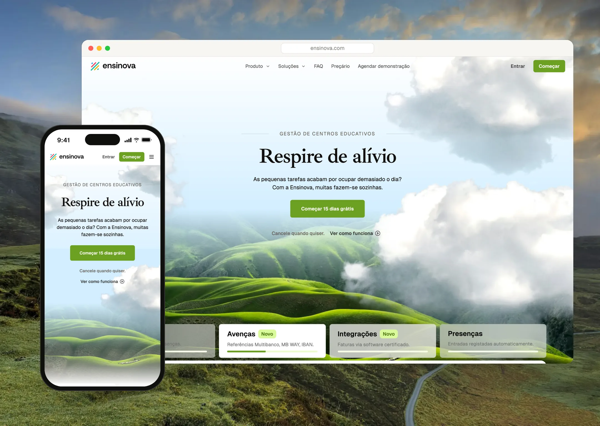
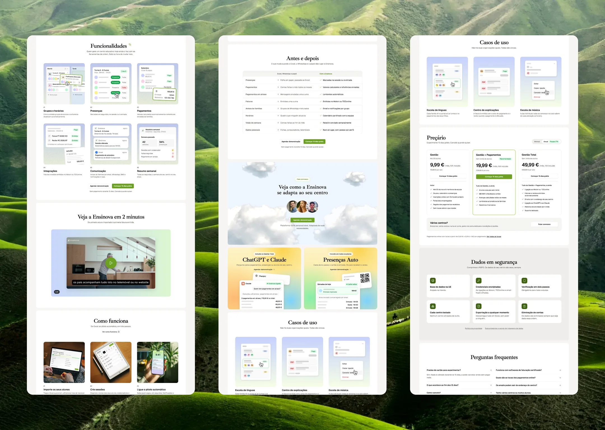
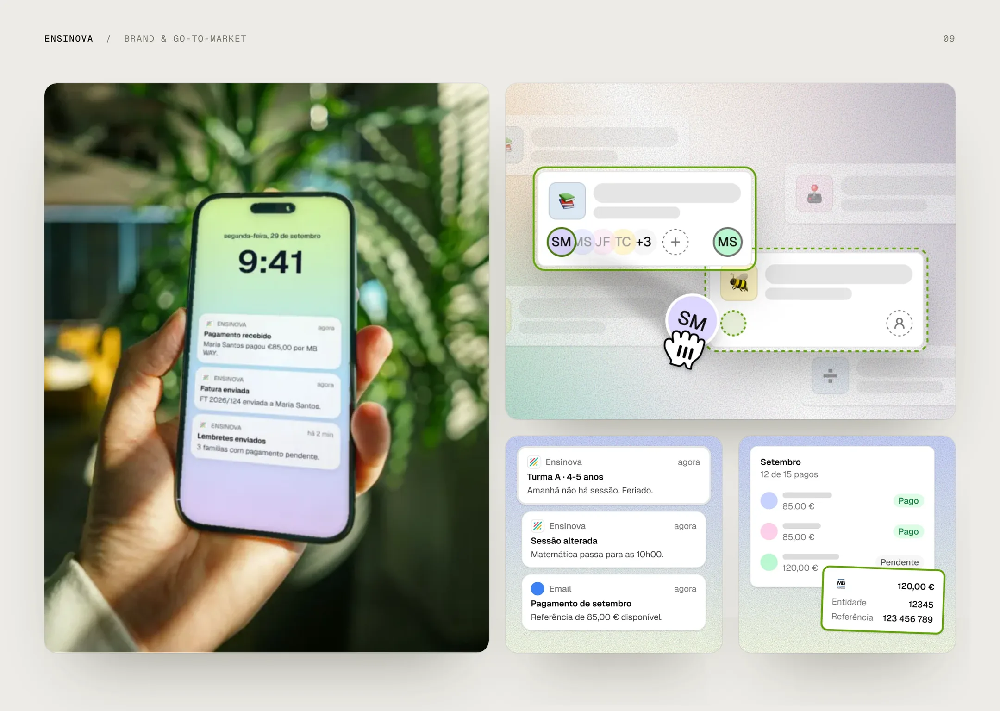
Ensinova represents the project where I pushed AI the furthest, both inside the product and in the way I build it. It all started with a simple goal: take the chaos out of running a small school.
I learned that AI doesn't replace good judgment, it amplifies the judgment you already have. The agents only became truly useful when I wrote down the rules I had learned the hard way over the years, from design reviews to the small details that make an interface feel calm.
It also confirmed something I always say: complexity is my job, not the user's. A school owner asking Claude who hasn't paid this month shouldn't have to think about permissions or databases, they should simply get the answer.